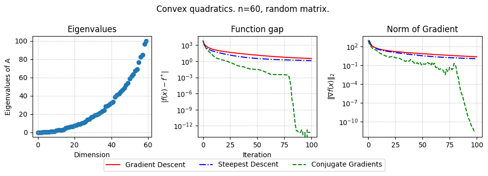
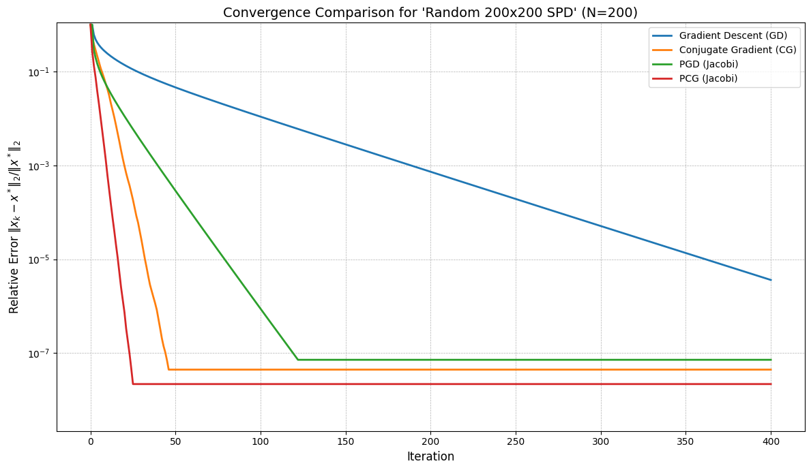

import numpy as np
import matplotlib.pyplot as plt
np.random.seed(228)
# Parameters
n = 100 # Dimension of x
mu = 10
L = 100
def generate_problem(n=100, mu=mu, L=L, problem_type="clustered"):
np.random.seed(228)
if problem_type == "clustered":
elif problem_type == "random":
A = np.random.randn(n, n)
factual_L = max(np.linalg.eigvalsh(A.T@A))
A = A.T.dot(A)/factual_L*L + mu*np.eye(n)
x_opt = np.random.rand(n)
b = A@x_opt
x_0 = 3*np.random.randn(n)
elif problem_type == "uniform spectrum":
A = np.diag(np.linspace(mu, L, n, endpoint=True))
x_opt = np.random.rand(n)
b = A@x_opt
x_0 = 3*np.random.randn(n)
elif problem_type == "Hilbert":
A = np.array([[1.0 / (i+j - 1) for i in range(1, n+1)] for j in range(1, n+1)])
b = np.ones(n)
x_0 = 3*np.random.randn(n)
x_opt = np.linalg.lstsq(A, b)[0]
elif problem_type == "worst_cg":
# Parameter t controls the condition number
t = 0.6 # Small t leads to worse conditioning
# Create tridiagonal matrix W
main_diag = np.ones(n)
main_diag[0] = t
main_diag[1:] = 1 + t
off_diag = np.sqrt(t) * np.ones(n-1)
A = np.diag(main_diag) + np.diag(off_diag, k=1) + np.diag(off_diag, k=-1)
# Create b vector [1, 0, ..., 0]
b = np.zeros(n)
b[0] = 1
# Since this is a specific problem, we compute x_opt explicitly
x_opt = np.linalg.solve(A, b)
x_0 = np.zeros(n) # Start from zero vector
return A, b, x_0, x_opt
return A, b, x_0, x_opt
# Optimization methods
def gradient_descent(f, grad_f, x_0, step_size, iterations, x_opt):
x = x_0.copy()
f_opt = f(x_opt)
values, gradients = [], []
values.append(abs(f(x) - f_opt))
gradients.append(np.linalg.norm(grad_f(x)))
for _ in range(iterations):
x -= step_size * grad_f(x)
values.append(abs(f(x) - f_opt))
gradients.append(np.linalg.norm(grad_f(x)))
return values, gradients
def steepest_descent(A, f, grad_f, x_0, iterations, x_opt):
x = x_0.copy()
f_opt = f(x_opt)
values, gradients = [], []
values.append(abs(f(x) - f_opt))
gradients.append(np.linalg.norm(grad_f(x)))
for _ in range(iterations):
grad = grad_f(x)
step_size = np.dot(grad.T, grad) / np.dot(grad.T, np.dot(A, grad))
x -= step_size * grad
values.append(abs(f(x) - f_opt))
gradients.append(np.linalg.norm(grad))
return values, gradients
def nesterov_accelerated_gradient(A, b, x_0, alpha, beta, iterations, x_opt):
x = x_0.copy()
y = x.copy()
f_opt = f(x_opt)
prev_x = x.copy()
values, gradients = [f(x)], [np.linalg.norm(np.dot(A, x) - b)]
for _ in range(iterations):
y = (1-beta)*y + beta * x
grad = grad_f(y)
x, y = y - alpha * grad, y
values.append(abs(f(x) - f_opt))
gradients.append(np.linalg.norm(grad))
return values, gradients
def conjugate_gradient(A, b, x_0, iterations, x_opt):
x = x_0.copy()
f = lambda x: 0.5 * x.T @ A @ x - b.T @ x
f_opt = f(x_opt)
r = b - np.dot(A, x)
p = r.copy()
values, gradients = [f(x)], [np.linalg.norm(r)]
for _ in range(iterations-1):
alpha = np.dot(r.T, r) / np.dot(p.T, np.dot(A, p))
x += alpha * p
r_next = r - alpha * np.dot(A, p)
beta = np.dot(r_next.T, r_next) / np.dot(r.T, r)
p = r_next + beta * p
r = r_next
values.append(abs(f(x) - f_opt))
gradients.append(np.linalg.norm(r))
return values, gradients
def run_experiment(params):
A, b, x_0, x_opt = generate_problem(n=params["n"], mu=params["mu"], L=params["L"], problem_type=params["problem_type"])
eigs = np.linalg.eigvalsh(A)
mu, L = min(eigs), max(eigs)
f = lambda x: 0.5 * x.T @ A @ x - b.T @ x
grad_f = lambda x: A@x - b
if mu <= 1e-2:
alpha = 1/L
else:
alpha = 2/(mu+L) # Step size
beta = (np.sqrt(L) - np.sqrt(mu))/(np.sqrt(L) + np.sqrt(mu)) # Momentum parameter
results = {
"methods": {
"Gradient Descent": gradient_descent(f, grad_f, x_0, alpha, params["iterations"], x_opt),
"Steepest Descent": steepest_descent(A, f, grad_f, x_0, params["iterations"], x_opt),
"Conjugate Gradients": conjugate_gradient(A, b, x_0, params["iterations"], x_opt),
# "nag": nesterov_accelerated_gradient(A, b, x_0, alpha, beta, params["iterations"], x_opt),
},
"problem":{
"eigs": eigs,
"params": params
}
}
return results
def plot_results(results):
linestyles = {
"Gradient Descent": "r-",
"Steepest Descent": "b-.",
"Conjugate Gradients": "g--"
}
plt.figure(figsize=(10, 3.5))
mu = results["problem"]["params"]["mu"]
L = results["problem"]["params"]["L"]
n = results["problem"]["params"]["n"]
problem_type = results["problem"]["params"]["problem_type"]
if mu > 1e-2:
plt.suptitle(f"Strongly convex quadratics. n={n}, {problem_type} matrix. ")
else:
plt.suptitle(f"Convex quadratics. n={n}, {problem_type} matrix. ")
plt.subplot(1, 3, 1)
eigs = results["problem"]["eigs"]
plt.scatter(np.arange(len(eigs)), eigs)
plt.xlabel('Dimension')
plt.ylabel('Eigenvalues of A')
plt.grid(linestyle=":")
plt.title("Eigenvalues")
if results["problem"]["params"]["problem_type"] == "Hilbert":
plt.yscale("log")
plt.subplot(1, 3, 2)
for method, result_ in results["methods"].items():
plt.semilogy(result_[0], linestyles[method])
plt.xlabel('Iteration')
plt.ylabel(r'$|f(x) -f^*|$')
plt.grid(linestyle=":")
plt.title("Function gap")
plt.subplot(1, 3, 3)
for method, result_ in results["methods"].items():
plt.semilogy(result_[1], linestyles[method], label=method)
plt.ylabel(r'$\|\nabla f(x)\|_2$')
plt.grid(linestyle=":")
plt.title("Norm of Gradient")
# Place the legend below the plots
plt.figlegend(loc='lower center', ncol=4, bbox_to_anchor=(0.5, -0.00))
# Adjust layout to make space for the legend below
plt.tight_layout(rect=[0, 0.05, 1, 1])
plt.savefig(f"cg_{problem_type}_{mu}_{L}_{n}.pdf")
plt.show()# Experiment parameters
params = {
"n": 60,
"mu": 1e-3,
"L": 100,
"iterations": 100,
"problem_type": "random", # Change to "clustered", "uniform spectrum", or "Hilbert" as needed
}
results = run_experiment(params)
plot_results(results)
Упражнение 1
В коде выше добавьте генерацию матрицы положительно определенной A, кластер которой состоит из 4 различных значений.
# Experiment parameters
params = {
"n": 60,
"mu": 1e-3,
"L": 100,
"iterations": 100,
"problem_type": "random", # Change to "clustered"
}
results = run_experiment(params)
plot_results(results)Предобуславливатели
Упражнение 2
В коде ниже добавьте функцию, реализующую предобуславливатель Якоби.
def jacobi_preconditioner(A):
""" Creates a LinearOperator for the inverse of the diagonal of A (Jacobi preconditioner). """
P_inv = spla.LinearOperator(
A.shape, # shape of the preconditioner
matvec=lambda v: A * v, # matrix-vector product
rmatvec=lambda v: A * v # transpose matrix-vector product
)
return P_inv# exercise_pcg.py
import numpy as np
import scipy.sparse as sp
import scipy.sparse.linalg as spla
import scipy.io as sio
import matplotlib.pyplot as plt
import requests
import io
import tarfile
import os
def download_and_load_matrix(matrix_name="bcsstk17", data_dir="."):
"""
Downloads and loads a matrix from the SuiteSparse Matrix Collection.
Falls back to a random SPD matrix if download fails.
"""
mm_filename = os.path.join(data_dir, f"{matrix_name}.mtx")
if not os.path.exists(mm_filename):
print(f"Matrix file {mm_filename} not found. Attempting download...")
url = f"https://sparse.tamu.edu/MM/Boeing/{matrix_name}.tar.gz"
try:
response = requests.get(url, stream=True)
response.raise_for_status() # Raise an exception for bad status codes
# Use BytesIO to handle the tarfile in memory
tar_data = io.BytesIO(response.content)
with tarfile.open(fileobj=tar_data, mode="r:gz") as tar:
# Find the .mtx file in the tar archive
mtx_member_name = None
for member in tar.getmembers():
if member.name.endswith(".mtx"):
mtx_member_name = member.name
break
if mtx_member_name:
# Extract directly to the data_dir
member_path = os.path.join(data_dir, os.path.basename(mtx_member_name))
# Ensure extraction doesn't overwrite outside data_dir (security)
if os.path.commonpath([data_dir, os.path.abspath(member_path)]) != os.path.abspath(data_dir):
raise Exception("Attempted path traversal in tar file.")
os.makedirs(data_dir, exist_ok=True)
# Extract the specific member
extracted_file = tar.extractfile(mtx_member_name)
if extracted_file:
with open(mm_filename, "wb") as f:
f.write(extracted_file.read())
print(f"Successfully downloaded and extracted {mtx_member_name} to {mm_filename}")
else:
raise Exception(f"Could not extract {mtx_member_name} from tar archive.")
else:
raise FileNotFoundError("No .mtx file found in the downloaded archive.")
except requests.exceptions.RequestException as e:
print(f"Download failed: {e}")
return None, None, None, False # Indicate failure
except tarfile.TarError as e:
print(f"Tar extraction failed: {e}")
return None, None, None, False # Indicate failure
except Exception as e:
print(f"An error occurred during download/extraction: {e}")
return None, None, None, False # Indicate failure
# Load the matrix
try:
A = sio.mmread(mm_filename)
if sp.isspmatrix_coo(A):
A = A.tocsr() # Convert to CSR for efficient matrix-vector products
print(f"Loaded matrix {matrix_name}: shape={A.shape}, nnz={A.nnz}")
# Check if symmetric (required for eigsh and CG theory)
if not np.allclose((A - A.T).data, 0):
print("Warning: Matrix is not symmetric. Making it symmetric (A+A.T)/2.")
A = 0.5 * (A + A.T)
A = A.tocsr()
# Check if positive definite by trying Cholesky or checking eigenvalues
try:
# Attempt Cholesky factorization (requires scikit-sparse or similar)
# Alternatively, check smallest eigenvalue (can be slow for large matrices)
lambda_min = spla.eigsh(A, k=1, which='SM', return_eigenvectors=False)[0]
if lambda_min <= 1e-10: # Check if sufficiently positive
print(f"Warning: Matrix may not be positive definite (smallest eigenvalue ~ {lambda_min}). Adding diagonal shift.")
A = A + sp.identity(A.shape[0]) * 1e-6
else:
print(f"Matrix appears positive definite (smallest eigenvalue ~ {lambda_min}).")
except Exception as e:
print(f"Could not verify positive definiteness ({e}). Proceeding with caution.")
# Generate true solution and rhs
n = A.shape[0]
np.random.seed(0)
x_true = np.random.rand(n)
b = A @ x_true
return A, b, x_true, True # Indicate success
except FileNotFoundError:
print(f"Matrix file {mm_filename} not found after download attempt.")
return None, None, None, False
except Exception as e:
print(f"Error loading matrix {mm_filename}: {e}")
return None, None, None, False
def gradient_descent(A, b, x0, max_iter=1000, tol=1e-6, x_true=None):
""" Solves Ax=b using Gradient Descent. """
history = []
x = x0.copy()
n = A.shape[0]
# Estimate lambda_max(A) for step size
try:
# Ensure A is symmetric before calling eigsh
if not hasattr(A, 'symmetric') or not A.symmetric:
if np.allclose((A - A.T).data, 0):
A.symmetric = True # Mark as symmetric if it is
else: # If not symmetric, eigsh on non-symmetric matrices is deprecated/problematic
raise ValueError("Matrix A must be symmetric for eigsh.")
lambda_max = spla.eigsh(A, k=1, which='LM', return_eigenvectors=False)[0]
# Optimal step size for quadratic requires lambda_min as well
# lambda_min = spla.eigsh(A, k=1, which='SM', return_eigenvectors=False)[0]
# tau = 2.0 / (lambda_max + lambda_min)
# Simpler choice (may converge slower):
tau = 1.0 / lambda_max
except Exception as e:
print(f"Warning: eigsh failed for A ({e}), using fixed step size 1e-7 for GD")
tau = 1e-7 # Small fixed fallback
print(f"Using step size tau = {tau:.2e} for GD")
norm_xtrue = np.linalg.norm(x_true) if x_true is not None else 1.0
norm_b = np.linalg.norm(b)
if x_true is not None:
history.append(np.linalg.norm(x0 - x_true) / norm_xtrue)
else:
history.append(np.linalg.norm(b - A @ x0) / norm_b)
for k in range(max_iter):
r = b - A @ x
norm_r = np.linalg.norm(r)
if x_true is not None:
err = np.linalg.norm(x - x_true) / norm_xtrue
history.append(err)
else:
# Use relative residual
history.append(norm_r / norm_b)
# Use relative tolerance for residual check
if norm_r / norm_b < tol:
print(f"GD converged in {k} iterations.")
break
x = x + tau * r
else: # Loop finished without break
print(f"GD did not converge within {max_iter} iterations.")
# Pad history if converges early
actual_iters = len(history)
if actual_iters < max_iter + 1:
history.extend([history[-1]] * (max_iter + 1 - actual_iters))
return x, history[:max_iter+1]
def conjugate_gradient_scipy(A, b, x0, max_iter=1000, tol=1e-6, x_true=None):
""" Solves Ax=b using scipy's Conjugate Gradient. """
history = []
norm_xtrue = np.linalg.norm(x_true) if x_true is not None else 1.0
norm_b = np.linalg.norm(b)
if x_true is not None:
history.append(np.linalg.norm(x0 - x_true) / norm_xtrue)
else:
history.append(np.linalg.norm(b - A @ x0) / norm_b)
iter_count = 0
def callback(xk):
nonlocal iter_count
iter_count += 1
if x_true is not None:
err = np.linalg.norm(xk - x_true) / norm_xtrue
history.append(err)
else:
# Use relative residual
r = b - A @ xk
norm_r = np.linalg.norm(r)
history.append(norm_r / norm_b)
# Use relative tolerance for spla.cg
x, info = spla.cg(A, b, x0=x0, maxiter=max_iter, tol=tol, callback=callback)
if info == 0:
print(f"CG converged in {iter_count} iterations.")
elif info > 0:
print(f"CG did not converge within {info} iterations.")
else:
print(f"CG failed with error code {info}.")
# Pad history if converges early
actual_iters = len(history)
if actual_iters < max_iter + 1:
history.extend([history[-1]] * (max_iter + 1 - actual_iters))
return x, history[:max_iter+1] # Return history up to max_iter
def jacobi_preconditioner(A):
return P_inv
# ============================================================
# === EXERCISE: Implement Preconditioned Methods ===
# ============================================================
# Objective: Implement PGD and PCG using the Jacobi preconditioner.
# The functions below are provided as a solution.
# For the exercise, you might comment out the implementation details
# and try to write them yourself based on the GD/CG implementations
# and the lecture notes on preconditioning.
def preconditioned_gradient_descent(A, b, x0, P_inv, max_iter=1000, tol=1e-6, x_true=None):
"""
Solves Ax=b using Preconditioned Gradient Descent with a given preconditioner P_inv.
P_inv should be a LinearOperator for the inverse of the preconditioner matrix P.
"""
history = []
x = x0.copy()
n = A.shape[0]
# Estimate lambda_max(P_inv * A) for step size
# Note: P_inv * A is generally not symmetric even if A and P are.
# eigsh requires symmetric operators. Power iteration is safer for lambda_max.
# For simplicity here, we'll try eigsh assuming effective symmetry or use fallback.
tau = 1e-7 # Small fixed fallback step size
try:
# Define the operator P_inv * A
# Note: For Jacobi (P=diag(A)), if A is SPD, P is SPD, and P^{-1/2} A P^{-1/2} is SPD.
# We apply GD to the transformed system P^{-1}Ax = P^{-1}b, or minimize
# f(x) w.r.t. P-inner product. Update is x = x + tau * P^{-1}r
# Step size depends on eigenvalues of P^{-1}A
P_inv_A_op = spla.LinearOperator(A.shape, matvec=lambda v: P_inv @ (A @ v))
# Use power iteration (or eigsh if confident about symmetry properties)
# spla.eigsh might fail if P_inv_A is not symmetric.
# Power iteration finds the largest eigenvalue in magnitude.
# We need largest positive eigenvalue for step size calculation if P_inv A is SPD.
# If A is SPD and P=diag(A) with positive entries, P_inv*A is similar to P^{-1/2}AP^{-1/2} which is SPD.
lambda_max_prec = spla.eigsh(P_inv_A_op, k=1, which='LM', return_eigenvectors=False, tol=1e-3)[0]
# Heuristic step size (often too conservative or requires lambda_min too)
if lambda_max_prec > 1e-10:
tau = 1.0 / lambda_max_prec
else:
print("Warning: Estimated lambda_max(P_inv*A) is close to zero.")
# tau remains the fallback
except Exception as e:
print(f"Warning: eigsh failed for P_inv_A ({e}), using fixed step size {tau:.1e} for PGD")
# tau remains the fallback
print(f"Using step size tau = {tau:.2e} for PGD")
norm_xtrue = np.linalg.norm(x_true) if x_true is not None else 1.0
norm_b = np.linalg.norm(b)
if x_true is not None:
history.append(np.linalg.norm(x0 - x_true) / norm_xtrue)
else:
history.append(np.linalg.norm(b - A @ x0) / norm_b)
for k in range(max_iter):
r = b - A @ x
norm_r = np.linalg.norm(r)
if x_true is not None:
err = np.linalg.norm(x - x_true) / norm_xtrue
history.append(err)
else:
# Use relative residual
history.append(norm_r / norm_b)
# Use relative tolerance for residual check
if norm_r / norm_b < tol:
print(f"PGD converged in {k} iterations.")
break
z = P_inv @ r # Apply preconditioner: z_k = P^{-1} r_k
x = x + tau * z # Update using preconditioned residual: x_{k+1} = x_k + tau * z_k
else: # Loop finished without break
print(f"PGD did not converge within {max_iter} iterations.")
# Pad history if converges early
actual_iters = len(history)
if actual_iters < max_iter + 1:
history.extend([history[-1]] * (max_iter + 1 - actual_iters))
return x, history[:max_iter+1]
def preconditioned_conjugate_gradient_scipy(A, b, x0, P_inv, max_iter=1000, tol=1e-6, x_true=None):
"""
Solves Ax=b using Preconditioned Conjugate Gradient with scipy's cg.
P_inv should be a LinearOperator for the inverse of the preconditioner P.
"""
history = []
norm_xtrue = np.linalg.norm(x_true) if x_true is not None else 1.0
norm_b = np.linalg.norm(b)
if x_true is not None:
history.append(np.linalg.norm(x0 - x_true) / norm_xtrue)
else:
history.append(np.linalg.norm(b - A @ x0) / norm_b)
iter_count = 0
def callback(xk):
nonlocal iter_count
iter_count += 1
if x_true is not None:
err = np.linalg.norm(xk - x_true) / norm_xtrue
history.append(err)
else:
# Use relative residual
r = b - A @ xk
norm_r = np.linalg.norm(r)
history.append(norm_r / norm_b)
# Use spla.cg with the M argument for the preconditioner (M = P_inv)
# M must represent the action of P_inv.
x, info = spla.cg(A, b, x0=x0, maxiter=max_iter, tol=tol, M=P_inv, callback=callback)
if info == 0:
print(f"PCG converged in {iter_count} iterations.")
elif info > 0:
print(f"PCG did not converge within {info} iterations.")
else:
print(f"PCG failed with error code {info}.")
# Pad history if converges early
actual_iters = len(history)
if actual_iters < max_iter + 1:
history.extend([history[-1]] * (max_iter + 1 - actual_iters))
return x, history[:max_iter+1]
# ============================================================
# === END OF EXERCISE SECTION ===
# ============================================================
def plot_convergence(histories, labels, title="Convergence Comparison", use_error=True):
""" Plots the convergence history of multiple methods. """
plt.figure(figsize=(12, 7))
for history, label in zip(histories, labels):
if history: # Check if history exists (method might have been skipped)
# Ensure history length matches iterations 0 to max_iter
iterations = range(len(history))
plt.semilogy(iterations, history, label=label, linewidth=2)
plt.xlabel("Iteration", fontsize=12)
ylabel = "Relative Error $\|x_k - x^*\|_2 / \|x^*\|_2$" if use_error else "Relative Residual Norm $\|Ax_k - b\|_2 / \|b\|_2$"
plt.ylabel(ylabel, fontsize=12)
plt.title(title, fontsize=14)
plt.legend(fontsize=10)
plt.grid(True, which='both', linestyle='--', linewidth=0.5)
# Adjust ylim based on expected convergence, avoid overly small limits if methods don't converge well
min_val = min(h[-1] for h in histories if h)
plt.ylim(bottom=max(1e-12, min_val / 10), top=1.1 * max(h[0] for h in histories if h)) # Start slightly above initial error/residual
plt.tight_layout()
plt.show()
# Main execution block
if __name__ == "__main__":
MATRIX_NAME = "bcsstk17"
DATA_DIR = "./matrix_data" # Directory to store downloaded matrix
# Download or generate matrix
A, b, x_true, loaded_real_matrix = download_and_load_matrix(MATRIX_NAME, DATA_DIR)
if not loaded_real_matrix:
print("Falling back to a random SPD matrix.")
# Generate a small random SPD matrix as fallback
n = 200 # Larger random matrix
np.random.seed(0)
# Generate sparse matrix directly
density = 0.01
A = sp.random(n, n, density=density, format='csr', random_state=0)
A = 0.5 * (A + A.T) # Make symmetric
# Ensure positive definiteness by adding diagonal dominance
diag_shift = sp.diags(A.sum(axis=1).A1 + 0.1, 0, format='csr')
A = A + diag_shift
x_true = np.random.rand(n)
b = A @ x_true
MATRIX_NAME = f"Random {n}x{n} SPD"
print(f"Using random matrix: shape={A.shape}, nnz={A.nnz}")
use_error_metric = (x_true is not None)
n_dim = A.shape[0]
x0 = np.zeros(n_dim) # Initial guess
# Parameters
MAX_ITER = min(1000, 2 * n_dim) # Max iterations, capped
TOL = 1e-8 # Relative tolerance
# --- Run Methods ---
print("\n--- Running Solvers ---")
x_gd, hist_gd = gradient_descent(A, b, x0, max_iter=MAX_ITER, tol=TOL, x_true=x_true)
x_cg, hist_cg = conjugate_gradient_scipy(A, b, x0, max_iter=MAX_ITER, tol=TOL, x_true=x_true)
# Setup and run preconditioned methods
hist_pgd, hist_pcg = None, None
try:
print("\nSetting up Jacobi Preconditioner...")
P_inv = jacobi_preconditioner(A)
print("Running Preconditioned Gradient Descent (PGD)...")
x_pgd, hist_pgd = preconditioned_gradient_descent(A, b, x0, P_inv, max_iter=MAX_ITER, tol=TOL, x_true=x_true)
print("Running Preconditioned Conjugate Gradient (PCG)...")
x_pcg, hist_pcg = preconditioned_conjugate_gradient_scipy(A, b, x0, P_inv, max_iter=MAX_ITER, tol=TOL, x_true=x_true)
except ValueError as e:
print(f"\nError setting up/using Jacobi preconditioner: {e}")
print("Skipping preconditioned methods.")
P_inv = None
# --- Plot Results ---
print("\n--- Plotting Convergence ---")
histories_list = [hist_gd, hist_cg]
labels_list = ["Gradient Descent (GD)", "Conjugate Gradient (CG)"]
if hist_pgd:
histories_list.append(hist_pgd)
labels_list.append("PGD (Jacobi)")
if hist_pcg:
histories_list.append(hist_pcg)
labels_list.append("PCG (Jacobi)")
plot_title = f"Convergence Comparison for '{MATRIX_NAME}' (N={n_dim})"
plot_convergence(histories_list, labels_list, title=plot_title, use_error=use_error_metric)
print("\n--- Exercise Completed ---")Matrix file ./matrix_data/bcsstk17.mtx not found. Attempting download...
Download failed: 404 Client Error: Not Found for url: http://sparse-files.engr.tamu.edu/MM/Boeing/bcsstk17.tar.gz
Falling back to a random SPD matrix.
Using random matrix: shape=(200, 200), nnz=992
--- Running Solvers ---
Using step size tau = 2.59e-01 for GD
GD did not converge within 400 iterations.
CG converged in 46 iterations.
Setting up Jacobi Preconditioner...
Running Preconditioned Gradient Descent (PGD)...
Using step size tau = 5.20e-01 for PGD
PGD converged in 121 iterations.
Running Preconditioned Conjugate Gradient (PCG)...
PCG converged in 25 iterations.
--- Plotting Convergence ---
--- Exercise Completed ---